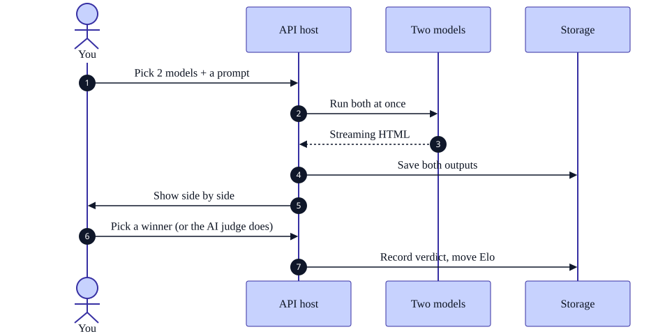

Tier 1 — Very basic
read in 30 secondsWhat a user actually does
Sign in
Any Microsoft account. In development there is also a "Continue as Guest" button.
Pick two models and a prompt
From a curated list of 18 prompts, or type your own. Only models confirmed reachable are offered.
Watch them race
Both start at once. Tokens stream live with a speed read-out for each side.
Judge
Pick a winner from the two rendered pages. If you do not pick within 60 seconds, an AI judge decides instead.
See the leaderboard move
Elo updates, and the duel joins the archive where you can export it as a self-contained HTML report.

DOCS/diagrams/payload_lifecycle_t1.mmd/demo is not a sandbox: its ten duels are real, are judged, and move the real leaderboard.Tier 2 — Basic overview
the path through the system
DOCS/diagrams/payload_lifecycle_t2.mmdThe five hops
-
UI submit —
Home.razorTwo model ids and a prompt go to
DuelApiClient.CommenceDuelAsync. The browser attaches thePoLocalCompare.Sessioncookie automatically (same origin,SameSite=Strict) andCorrelationHandlerstampsX-Correlation-IDso the request can be followed through the logs.src/PoLocalCompare.Client/Pages/Home.razor → Services/DuelApiClient.cs:46
-
Minimal API POST —
/api/duelsValidates that
PromptTextis non-empty, clamps anyautoJudgeDelaySecondsoverride to 0–3600, resolves the actor frompreferred_username, writes theDuelrow asPending, queues execution, and returns 202 Accepted with the duel id. The work has not started yet — that is the point of 202.Features/Duels/DuelsEndpoints.cs:29 → CommenceDuelHandler.cs
-
Middleware — ten stages, in this order
Serilog logging → RFC 7807 exception handler → CSP header →
/_frameworkcache control → Blazor + static files → routing → authentication → authorization → endpoints → SPA fallback. Static files are deliberately served before authentication, or the deny-by-default policy would 401 the WASM runtime that contains the login screen.src/PoLocalCompare.Api/Program.cs:260–431
-
Orchestrator —
DuelExecutionServiceDequeued by
BackgroundTaskServicein its own DI scope. Opens a 900-second watchdog, resolves an inference strategy per model type, and runs both sides underTask.WhenAll. Server-side models stream through a proxy; browser models get aStartLocalInferencepush over SignalR and are then polled for.Features/Duels/DuelExecutionService.cs:63
-
Providers → storage
Foundry and Ollama stream SSE; the browser worker posts its finished output back. Each result is enriched (character density, quality score, energy) and written to the
DuelResultstable — or to theduel-html-outputsblob container with ablob://pointer left behind, if the HTML exceeds 64 KB.Common/Inference/*.cs → Features/Duels/DuelResultRepository.cs
Then the verdict
Human path
The Arena swaps to the verdict UI on DuelComplete. Picking a side posts to /api/duels/{id}/verdict with VerdictSource.Human and the actor's username. A human who picks inside the grace window always wins the race — the auto-judge re-reads the duel and stands down on anything but Pending.
Auto-judge path
After AiJudge:DelaySeconds (60 by default; demo mode passes 0), gpt-5.4-nano is asked which output followed the prompt better — unless exactly one side failed, in which case the survivor takes a walkover and no judge call is made at all. It answers under a strict JSON schema — A, B or Tie — with the two documents assigned to slots by a coin flip so the well-known position bias lands on Left and Right equally.

DOCS/diagrams/duel_state_t2.mmdTier 3 — Complete end-to-end trace
every hop, every failure modePayload lifecycle sequence (required output)

DOCS/diagrams/payload_lifecycle.mmd → DOCS/assets/payload_lifecycle.svg, compiled with npx @mermaid-js/mermaid-cli -b transparentHop-by-hop payload trace
| # | Hop | Payload / wire shape | Transform applied | Source |
|---|---|---|---|---|
| 1 | Browser → API | POST /api/duels {LeftModelId, RightModelId, PromptText, AutoJudgeDelaySeconds?} | Cookie attached by the browser; X-Correlation-ID and X-Session-ID stamped by CorrelationHandler | DuelApiClient.cs:46 |
| 2 | Serilog scope | — | Enriches the diagnostic context with CorrelationId, UserId, SessionId, RequestPath, RequestMethod; 4xx→Warning, 5xx→Error, static assets→Debug | Program.cs:260 |
| 3 | AuthN / AuthZ | — | Cookie ticket → ClaimsPrincipal; fallback policy demands an authenticated user unless the endpoint opted out | BffAuthentication.cs:43 |
| 4 | Endpoint validation | CommenceDuelRequest | Empty prompt → ValidationProblem; delay clamped 0–3600; IdentityResolver.ResolveActor → "anonymous" when no preferred_username | DuelsEndpoints.cs:35–58 |
| 5 | Handler → Table | Duel entity — PK yyyyMM, RK ULID | Rejects a self-duel (Left == Right); snapshots both display names so the archive survives model retirement; sets VerdictDeadline = StartedAt + 24 h | CommenceDuelHandler.cs · Duel.cs |
| 6 | API → Browser | 202 Accepted + DuelDto, Location: /api/duels/{id} | SPA navigates to /arena/{id} and calls JoinDuel on the hub | DuelsEndpoints.cs:62 |
| 7 | Queue → orchestrator | closure over duelId | BackgroundTaskService awaits each item before dequeuing the next — a strictly sequential worker | BackgroundTaskQueue.cs |
| 8a | Orchestrator → Foundry | {messages[2], stream:true, stream_options.include_usage, max_tokens|max_completion_tokens, temperature?} | FoundryChatRequest.Build drops temperature and switches to max_completion_tokens for reasoning deployments | FoundryChatRequest.cs |
| 8b | Orchestrator → browser | hub "StartLocalInference" {duelId, modelId, side, webLlmModelId} | Re-sent every 5 s so a client that joined the group late still receives it | DuelExecutionService.cs:250 |
| 9 | SSE chunk → hub frame | ModelStatusUpdateDto {tokenCount, elapsedMs, warmUpMs, tokenVelocity, peakTokenVelocity, isStalled, htmlTagCount, openTagDepth, styleRuleCount, repetitionScore, htmlPreview} | HtmlStreamCounters scans the partial document; the preview is attached only every 25 tokens to bound bandwidth | SseChatStreamReader.cs · HtmlStreamCounters.cs |
| 10 | Completion → enrichment | DuelResult | HtmlOutputNormalizer strips code fences and stray prose; HtmlOutputQualityScorer computes the persisted score; GreenStatsCalculator derives Wh and USD for local models; remote models get ApiCostUsd | DuelResultEnricher.cs |
| 11 | Persist | Table row, or Blob + blob:// pointer | Threshold is 64 KB — the Table Storage per-property limit. Upsert is TableUpdateMode.Replace | DuelResultRepository.cs:26–38 |
| 12 | Done frame | ModelStatusUpdateDto {status: Done, htmlPreview: finalHtml ≤ 40 000 chars} | The finished document rides out with Done rather than waiting for DuelComplete, so a model that finishes first is not left showing a truncated mid-stream preview | DuelExecutionService.cs:228 |
| 13 | Duel completion | DuelDto over hub "DuelComplete" | CompletedAt written with a 412 re-read guard so it can never clobber a verdict that landed mid-inference | DuelExecutionService.cs:110–143 |
| 14 | Verdict | RecordVerdictCommand {duelId, verdict, source, rationale?, judgeModel?, actor?} | Single ELO path. EloCalculator K=32 with a 0.1-point minimum shift for decisive outcomes; two EloHistory rows appended; HybridCache tag-invalidated | RecordVerdictHandler.cs |
| 15 | Broadcast | hub "VerdictRecorded" + lobby event | Raised from inside the verdict handler, so the activity feed is complete by construction. LobbyNotifier swallows its own failures — the ticker must never fail a duel | LobbyNotifier.cs |
| 16 | Export | GET /api/duels/{id}/report → text/html attachment | HtmlLabReportRenderer produces a self-contained file; Content-Disposition: attachment; filename="lab-report-{id}.html" | ExportLabReportHandler.cs |
Failure modes and resilience
| Condition | Response | Handling | What the user sees |
|---|---|---|---|
| 401 Unauthorized no session, protected endpoint |
401, empty body | OnRedirectToLogin is rewritten from the default 302 to a bare 401, so an API caller never receives an HTML login page. OnRedirectToAccessDenied likewise returns 403. |
AuthorizeRouteView renders Login.razor instead of the requested page. |
| 404 Not Found unknown duel or model |
404 {error} | DuelApiClient.GetDuelAsync uses GetAsync rather than GetFromJsonAsync specifically so a 404 becomes a null instead of an exception. |
"That duel no longer exists — it may have been wiped with the local storage, or the link may be mistyped", with links to start a new duel or browse the archive. |
| 404 on the Foundry deployment route | internal | Automatic fallback to /models/chat/completions with the model named in the body. If that also fails, the failure reason names both endpoints and both response bodies (clipped to 300 chars). |
A failure card on that side of the Arena, with a "Show technical details" disclosure. |
| 409 Conflict duel already judged |
409 {error} | RecordVerdictHandler throws InvalidOperationException on a second verdict. First write wins, always — this is the invariant that lets a human and the auto-judge race safely. |
The verdict already on screen stands. |
| 412 Precondition Failed ETag race in Table Storage |
internal | Three distinct handlers: duel completion re-reads and reapplies only CompletedAt; the auto-judge's stand-down note is dropped (informational, not load-bearing); the seeder's pricing back-fill defers to the next startup. |
Nothing — by design. |
| 422 Unprocessable malformed verdict |
422 {error} | ArgumentException from the handler. |
Vote buttons stay active. |
| 429 Too Many Requests Foundry rate limit, duel inference |
internal | Up to 3 attempts. Retry-After is parsed (delta-seconds or HTTP-date) and clamped to 1–90 s; without a header, exponential 2n s. Logged at Warning with attempt count. |
The token counter pauses, then resumes. If all attempts fail, a failure card. |
| 429, auto-judge | internal | JudgeRateLimitedException carries the Retry-After (clamped ≤ 60 s so an adversarial 86400 cannot park a demo for a day) back to AutoJudge, which re-queues via the background queue rather than blocking — so the next duel in a demo run is not stalled. Budget: AiJudge:RateLimitRetryMax = 2, then it stands down. |
The duel stays Pending and shows "judge stood down (rate-limit)"; a human can still decide it. |
| 500 unhandled | 500 application/problem+json | RFC 7807 shape with correlationId. detail and stackTrace are populated in Development only; Production returns "An internal server error occurred." |
Generic error; the correlation id ties it to the log entry. |
| 503 Service Unavailable storage still initializing |
503 problem+json | A Table Storage 404 during duel creation is translated to "Duel storage is initializing. Please retry in a few seconds." | Actionable retry message rather than a stack trace. |
| Watchdog — 900 s | internal | A single CancellationTokenSource spans both sides. Generous because a cold browser model must JIT its WebGPU shaders on first run. Expiry yields IsFailure with "Watchdog timeout (900s)". |
Failure card on the side that never finished. |
| Both models fail | internal | The judge refuses to decide: "neither model produced output". The duel stays Pending with JudgeStoodDownReason persisted, and RecordVerdictHandler.GuardAgainstNoEvidenceAsync independently rejects any verdict write for it with a 422. |
Two failure cards; the Arena offers Retry duel. This is now the only path on which a finished duel banks no rating at all. |
| Exactly one model fails | internal | Awards a walkover to the survivor and moves ELO, without calling the judge model at all. This reverses the earlier rule (PRD §9 item 20): a duel with one usable output is evidence about the model that produced it, and the failure is recorded in the loser's DuelCount. Found when two consecutive demo duels left a survivor uncredited and the duel parked awaiting a human who never arrived. |
Winner banner with the rationale "Walkover: opponent (left|right) failed to produce output (…)". |
| Judge reply unparseable / empty | internal | Returns null; the duel stays Pending. Note the token budget is 2,000 rather than a few dozen precisely because the default judge is a reasoning model — too small a budget returns a well-formed response with empty content, which would read as "could not decide". |
Duel remains judgeable by hand. |
| Ollama not running | internal | Connection refused is logged at Warning, not Error — it is the expected state when no daemon is installed. The failure reason names the base URL. | "Not found in Ollama" on the model card; the pairing is not offered. |
| Browser lacks WebGPU | client | WebGpuCapability probes at load. Browser models stay selectable regardless because they download on first use, but the capability report drives the health panel. |
Diagnostic state on the model card. |
| CDN blocked weights or model_lib |
client | The worker prefers wwwroot/models/ and falls back to two different hosts — HuggingFace for weights, raw.githubusercontent.com for the WASM libraries. Half-populating the directory is the failure mode to watch for. |
The model stalls at Initializing; the stall note explains it. |
Features:UseRealAi off |
client | Mandated by standards §7: NavMenu.razor renders role="alert" aria-live="polite" with "⚠ USING MOCK DATA — Features:UseRealAi is disabled. AI responses are simulated." Both test hosts set this to false. |
A persistent banner above the nav. |
OnStartLocalInference handler, runs WebLlmService, and posts to /local-result. A change that breaks that handler leaves every WebGPU pairing sitting at Initializing until the 900-second watchdog fires, with nothing in the server log to explain it. Editing webllm-worker.js without bumping the ?v=N cache-buster in webllm-interop.js produces exactly this symptom.Complete verdict state machine

DOCS/diagrams/duel_state.mmdSecondary workflows
| Workflow | Entry | Trace | Notes |
|---|---|---|---|
| Sign in | Login.razor → /auth/login/microsoft | Challenge → Entra → /signin-oidc → cookie issued → BffAuthenticationStateProvider re-reads /auth/me | PKCE, SaveTokens, claims from the userinfo endpoint, MapInboundClaims=false. The SPA never holds a token. |
| Archive browse | /archive | GET /api/duels?limit=&before= — limit clamped 1–100 (absent or 0 → 20); before must be a bare yyyyMM stamp or the request is a validation problem | Cursor paging over partition keys, newest first. |
| Export lab report | Arena or Archive | GET /api/duels/{id}/report → self-contained HTML attachment | Contains the raw persisted output — the runtime probe's injected reporter script exists only in the sandboxed preview and never reaches anything exported, persisted or judged. |
| Leaderboard | /leaderboard | GET /api/leaderboard?sortBy= — served from HybridCache (30 s, tag leaderboard), invalidated on every verdict | Sort by Elo, output quality or average cost. Kill list gives per-opponent head-to-head records. |
| Demo mode | /demo | GET /api/duels/demo-plan?rounds=10 then ten ordinary POST /api/duels with autoJudgeDelaySeconds: 0 | Not a sandbox. The duels persist, are judged and move Elo. The override cannot switch the judge on — AiJudge:Enabled=false still restores human-only verdicts. |
| Retry a duel | Arena, after a failure | Creates a fresh duel with the same pairing and prompt | For transient failures; the original failed duel stays in the archive. |
Observability of a single request
A correlation id set by the client survives the whole trip: X-Correlation-ID → Serilog diagnostic context → the 500 handler's correlationId field. Inference calls additionally open a gen_ai.chat span tagged with provider, model, token usage, finish reason and truncation flag.
Two gaps worth knowing when you debug a slow duel: time-to-first-token and tokens/second are stored on the result row but never emitted as metrics, so you cannot chart them; and browser-model inference emits no telemetry at all, because it happens in the user's tab. See the AI services report.